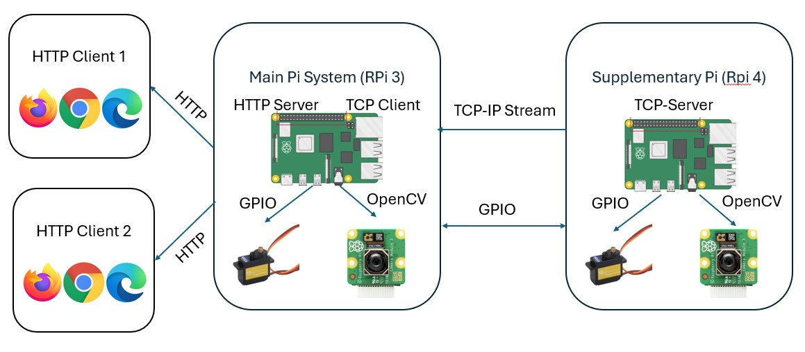

Our project, IoT Sauron, implements a multi-camera system utilizing OpenCV and Raspberry Pi for real-time human tracking. The system includes two strategically positioned cameras on servo-motors that can pivot to track a human subject across the X-Y plane. This setup, inspired by "The Lord of the Rings," aims to provide seamless tracking by switching the active camera as the subject moves between their ranges.
Figure 1: Video of the Embedded OS demonstration.
System Architecture
The system architecture for this project involves several components which are responsible for exchanging data and information. Each raspberry pi board is responsible for reading a camera feed and controlling their respective servo-motors. However, the difference between these two systems is that the main raspberry pi board is responsible for acting as a server and client simultaneously. This means it isa actively receiving streams from the other raspberry pi's while also posting it's own stream related information via HTTP. A system architecture diagram for this project is shown below by figure 2.

Figure 2: Overall System Architecture Diagram for Project.
Servos
The servos are essential for our IoT Sauron project, allowing the cameras to track moving subjects smoothly and accurately. Initial tests involved basic motion tracking, which evolved to more sophisticated control algorithms like a Proportional Controller (P controller) to reduce servo jitter. This adjustment aims to maintain the object centrally within the frame, enhancing tracking stability. Despite challenges in synchronization and motor noise, recent advancements have significantly improved the responsiveness and precision of our servo mechanisms.
Streaming
The streaming functionality of IoT Sauron is facilitated through UDP socket programming, allowing high-speed video transmission across the network. We employ multithreading to manage concurrent data streams efficiently, enhancing the system's ability to handle video feeds from multiple cameras without significant latency. The integration of Streamlit has also been explored to provide a user-friendly interface for live video feedback.
Results
The upcoming final demonstration of IoT Sauron aimed to showcase the seamless integration of all components. We expected to display continuous and effective tracking of a human subject, with real-time switching between camera views to maintain consistent monitoring. This demonstration highlighted the project's success in achieving robust real-time tracking, potentially setting a precedent for future developments in automated surveillance technology.
Figure 3: Video of the final system demonstration.